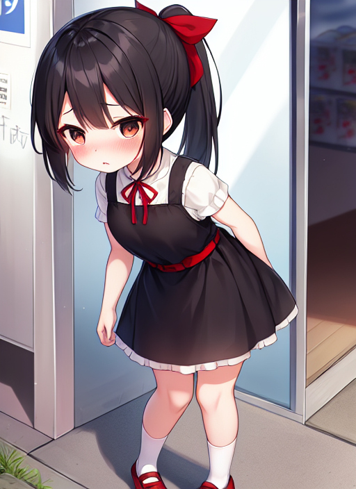

名札
とある町に波手那小学校という不思議な学校が存在した。
なんでも、１週間に１人ずつ児童数が増加していくという、なんとも奇妙なことが起きている学校なのである。
しかしながら、その事実を知っているのはとある人物以外誰も知らないのである。
ある日曜日、大学生の瀬戸碧月はコンビニの買い物を終えて帰宅中の道端であるものを拾った。
「なんだこれ？ 小学校の名札か？」
それは、オレンジ色のフェルトに『波手那小』と書かれたプラスチックのプレートが縫い付けられた名札だった。
しかし、よく見ると学校名が書かれているが肝心の名前が書かれていない。
「何で名前が書かれてないんだ？」
その名札を見て不思議に思う碧月。
ると、突然手に持っていた名札が勝手に動き出して碧月の服の左胸あたりにくっついた。
「ちょっ！？」
いきなりの出来事に驚きを隠せない碧月。
碧月はすぐに胸元の名札を取ろうとするが、まったくビクともしない。
「そんな、取れない・・・。」
何度やっても取れないことに焦り出す碧月。
その途端、胸元の名札に独りでに『瀬戸』と名前が刻まれていくではないか。
「俺の名前が書かれてる！？ 違う！ 俺は小学生じゃない！」
そして、名前が完全に名札に刻まれ終わると同時に碧月に異変が起こり始める。
170くらいの身長がぐぐっと100前半までに縮み、同時に手や脚の筋肉もなくなって細くなり、ムダ毛ひとつないとてもつるつるとしたものに変わっていくのだった。
茶髪に染めてた髪も、背中まで伸びたと同時に黒色の髪となり、後頭部にかわいいリボンが付けられる。
脂ぎった男くさい顔つきも、まんまるとしたかわいらしい女子の顔になっていく。
そして、男にあった例のアレはシュルシュルと縮んでいき跡形もなく消えていった。
さらに、着ていたＴシャツと穿いていたズボンはどろっと溶けて一体化して、黒色を基調としたワンピースに変わり、靴もサンダルからかわいらしい赤いものになり、白のハイソックスが穿かされた。
数分後、碧月に起きた変化が終わった。
だが、その姿は大人の男性と呼べるものではなく、かわいいという言葉が似合う小さな女の子と化していた。
「そんな・・・。俺、女の子に・・・。」
口から出ている声も完全に女の子の声となり、喋り方以外面影が消えたのがうかがえる。
その状況に呆然と立ちすくむ碧月。
と、その時だ。
碧月だった女の子に向かって１人の女性が歩いてきた。
「あんた、誰だよ・・・？」
「私は波手那小の校長の小林です。えーと、瀬戸君。じゃなくて瀬戸さん、とてもかわいい姿になりましたね。」
純の変わり果てた姿を見て不敵に笑う小林。
「あんたの仕業か！？」
「ええそうよ。あなたが拾ったその名札、それに触るとうちの学校の女子児童になる代物なの。ちなみに、あなたが拾ったのは２年生の名札だから。」
「何だと！？」
「ということで、今日からあなたは波手那小の２年生としてがんばってね♪ 瀬戸さん♪」
そう言って、小林は透かさず碧月の胸元の名札を小突いた。
その途端、碧月の記憶が一瞬で小学生の記憶へと書き換えられてしまった。
「あれ！？ こーちょーせんせー、なにしてるの？」
「葵ちゃんこそ、学校が休みなのに名札を付けてどうしたの？」
「あおい、からだが小さいせいでようちえんとまちがえられるの。だから、いっつもなふだをつけてしょうがくせいとわかってもらえるようにしてるの。」
「あらそうなの。でも、休みの日くらいは危ないから外しなさい。」
「やだ！ このままでいいの！」
「しょうがないわね。もう好きにしなさい。」
「やったー♪ せんせーありがとー♪」
「それじゃあ、葵ちゃん。気をつけて帰ってね。」
「ハーイ♪ せんせーさよーなら♪」
こうして、碧月改め葵は小林と別れた後スキップしながら帰っていった。
「フフ、今回も大成功ね。さて、来週はどの人を女子児童に変えちゃおうかしら。」
不気味な笑いをしながら、小林はどこかへと歩いていった。